Qué tenés que hacer hoy
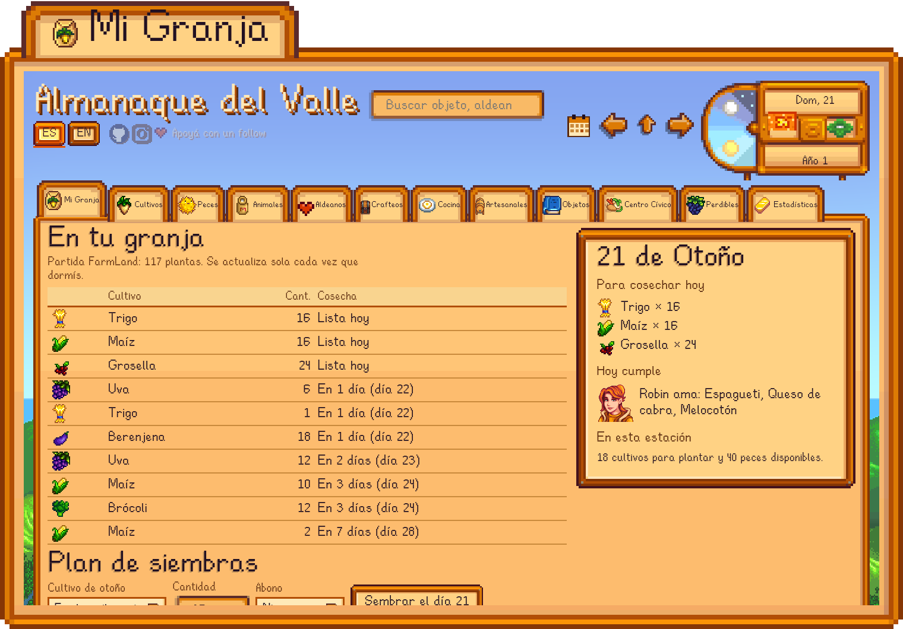
El almanaque lee tu partida cada vez que dormís: qué está listo para cosechar, quién cumple años y qué le regalás, sin salir a buscarlo.
Todo el valle en doce pestañas
- Mi GranjaLo plantado, las cosechas que vienen y los cumpleaños.
- CultivosTabla por estación y calculadora de semillas, abono y ganancia.
- PecesFiltros por estación, clima, hora y zona.
- AnimalesCiclo de vida, productos y precios.
- AldeanosCumpleaños, regalos favoritos y por dónde andan.
- CrafteosLas recetas que sabés, cuántas te alcanzan y cómo aprender las que faltan.
- CocinaQué podés cocinar ya, qué conviene en la estación y cómo se consigue cada receta.
- ArtesanalesQué procesa cada máquina y qué conviene hacer con lo que tenés.
- ObjetosLos más de 2.000 ítems del juego (objetos, armas, ropa, sombreros, muebles…) con su ficha.
- Centro CívicoSalas, lotes y de dónde sale cada objeto.
- PerdiblesLo que se te escapa si no lo hacés esta estación.
- EstadísticasIngresos, niveles y contadores de tu partida.
Arriba, un buscador para cualquier objeto, aldeano, receta o festival (con dónde está cada aldeano a la hora que elijas) y el calendario del pueblo para saltar a cualquier día. Los botones ES/EN cambian el idioma.
Por dentro
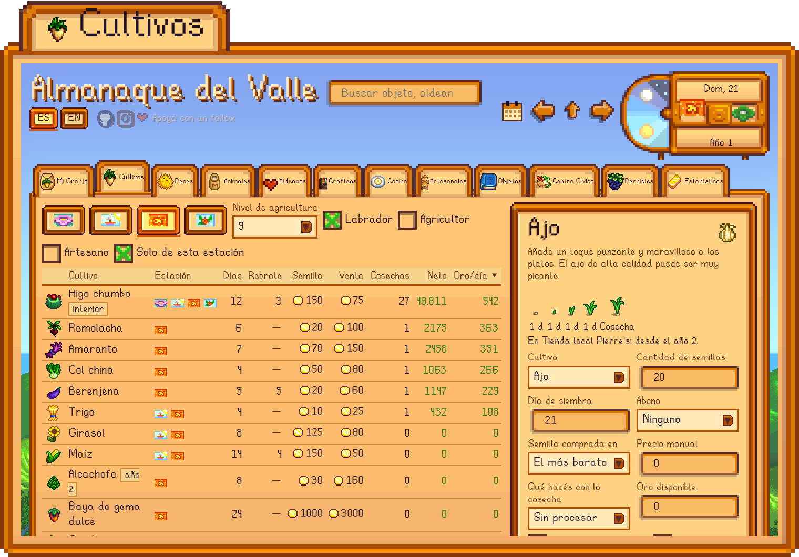
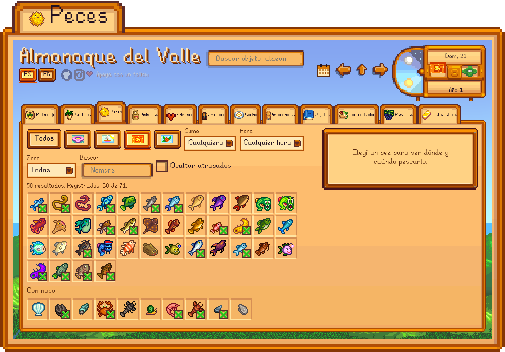
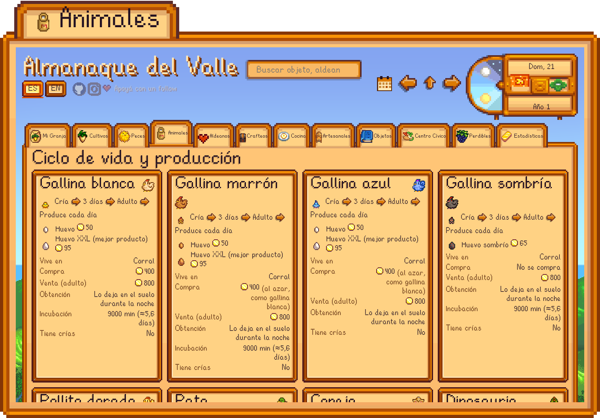
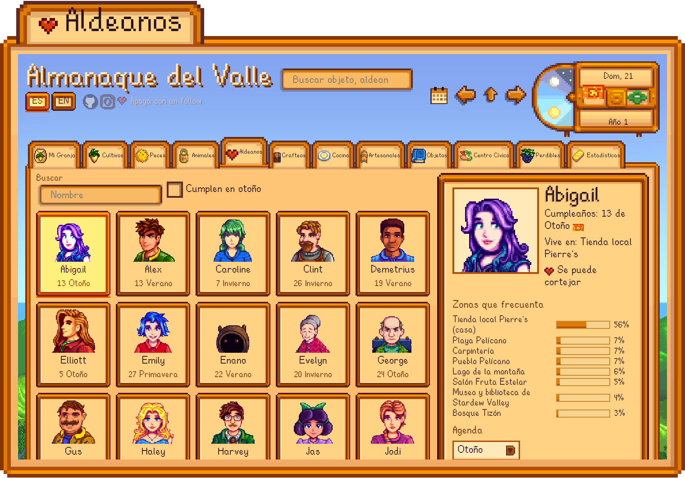
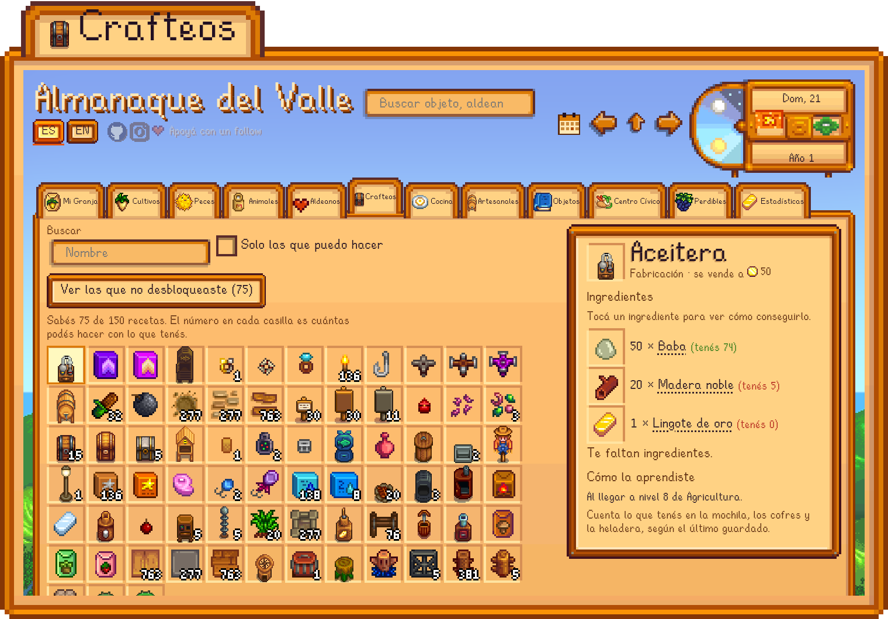
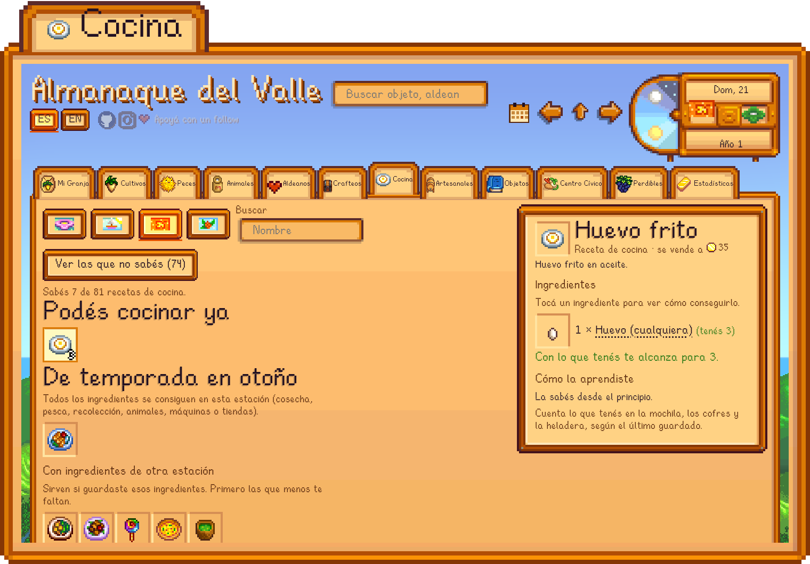
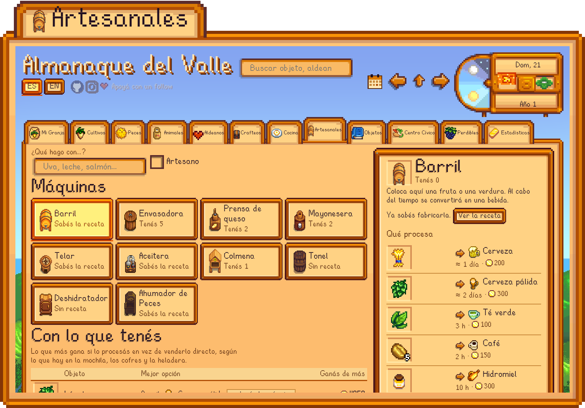
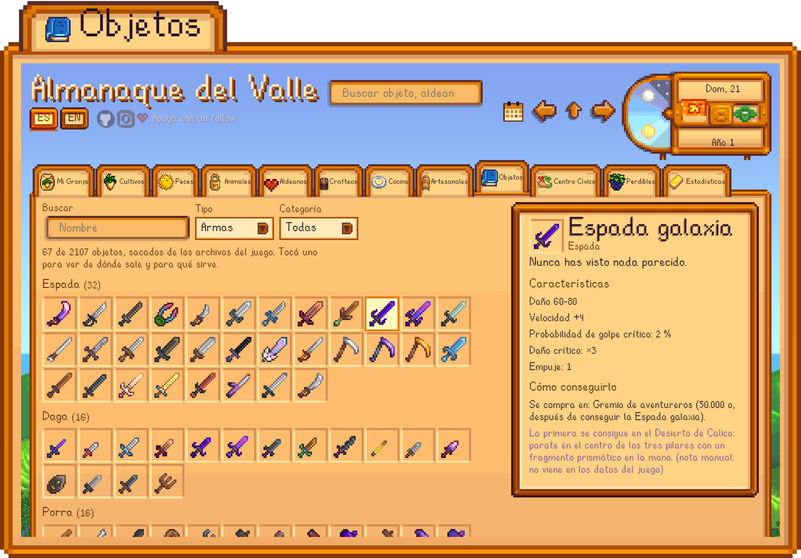
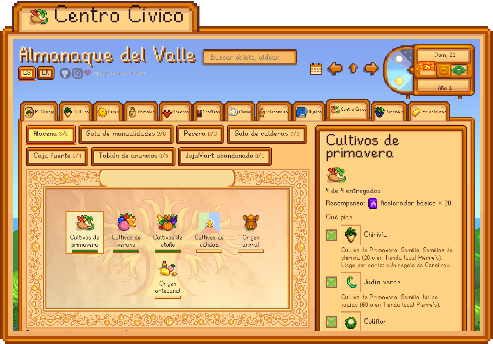
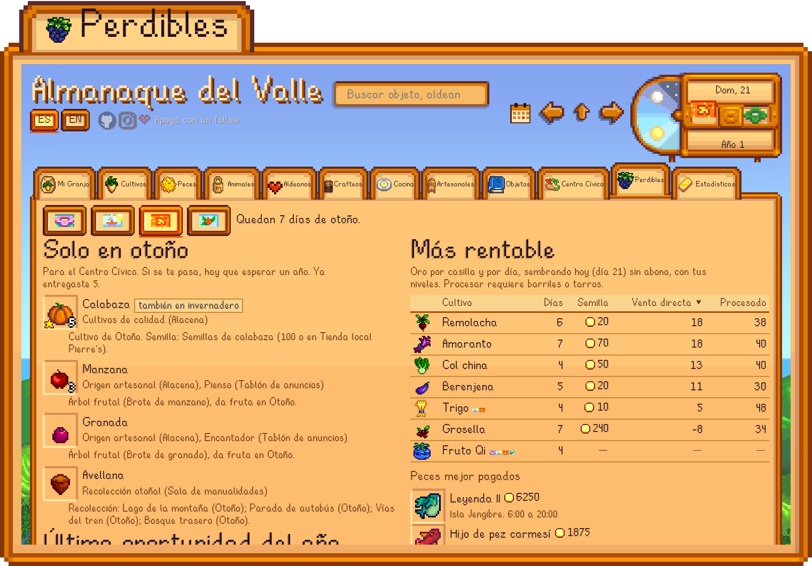
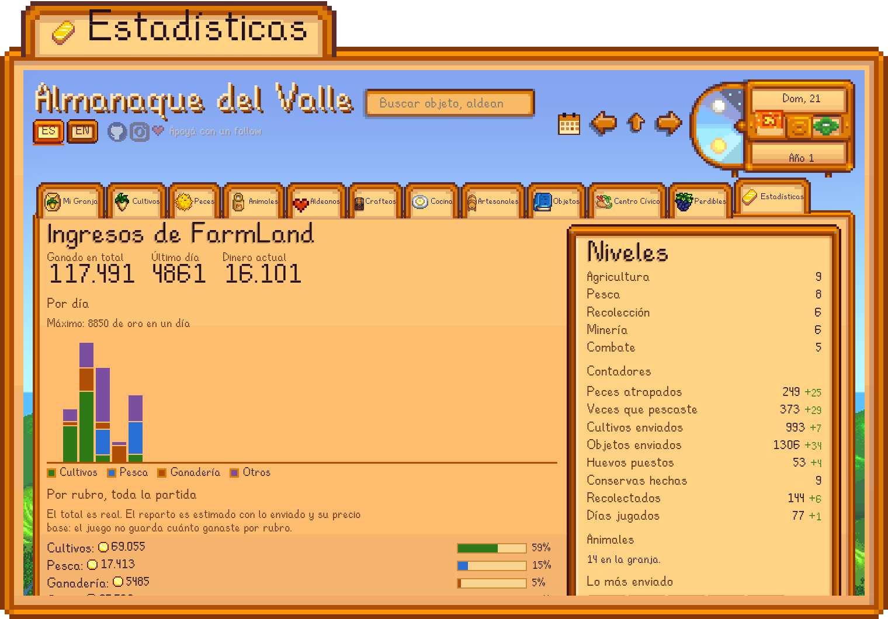
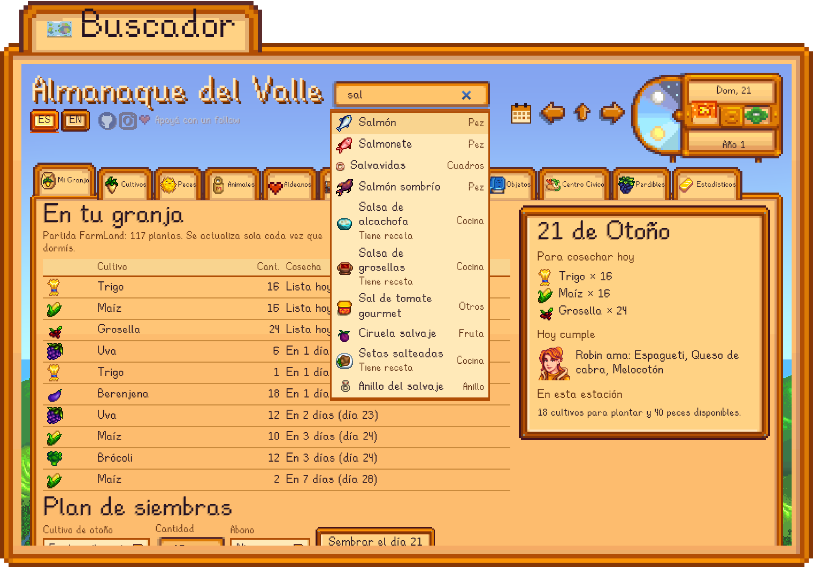
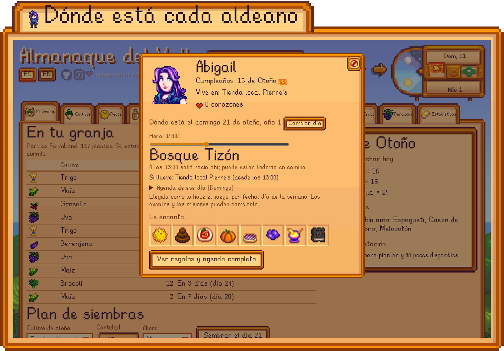
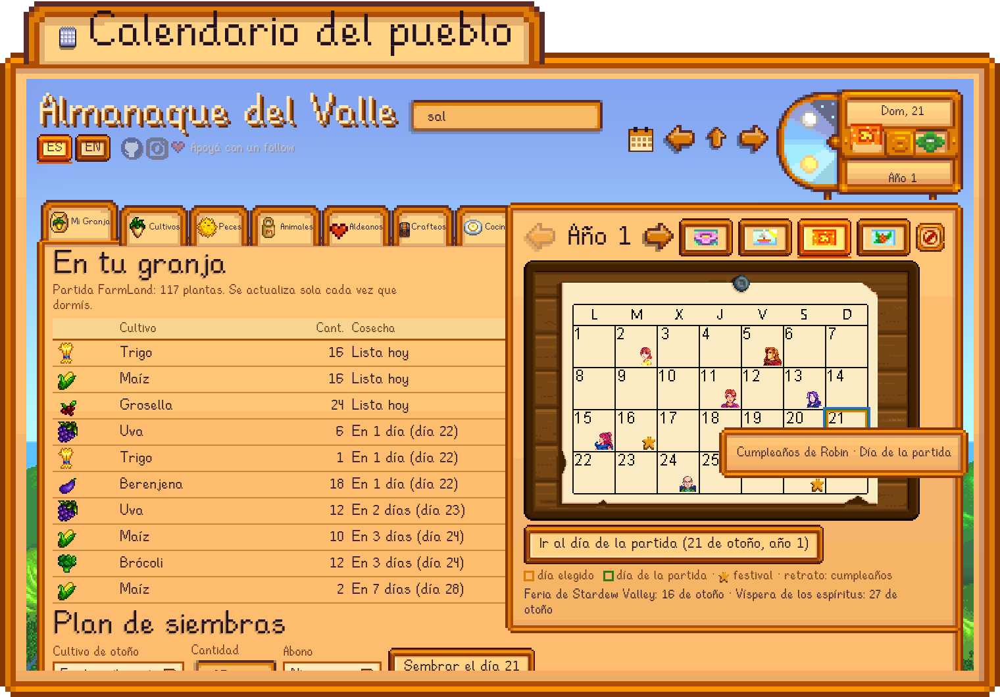
Instalar
Necesitás Stardew Valley instalado (Steam o GOG). El instalador genera la wiki desde tu propia copia del juego.
Windows
Descomprimí el ZIP y hacé doble clic en instalar.bat. Si falta Python o Node.js, los instala con winget.
macOS
Descomprimí el ZIP, mové la carpeta fuera de Descargas y hacé doble clic en instalar.command. Si falta Node.js, lo instala con Homebrew.
Linux
Con Python 3.9+ y Node.js 22.7+:
git clone https://github.com/GonViv05/valley-almanac.git cd valley-almanac sh instalar.sh
Tus partidas solo se leen. No es un mod y no hace falta SMAPI.